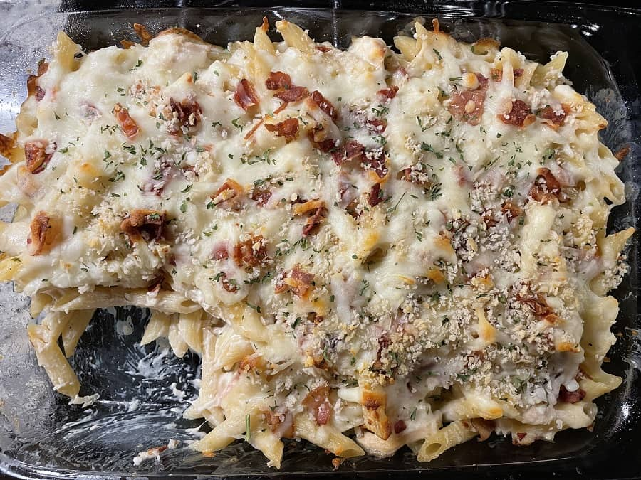

Chicken Bacon Ranch Casserole★
 6 servings
6 servings 1 hour
1 hour-
 Pillsbury
Pillsbury
This casserole is easy to make, tastes great, and reheats really well later.

Ingredients
| 1 lb | penne pasta | |
| 2 cups | shredded cooked chicken | |
| 1 jar (15 oz) | alfredo pasta sauce | |
| 1/2 cup | ranch dressing | |
| 6 slices | cooked chopped bacon | |
| 2 cups (8 oz) | shredded mozzarella cheese | |
| panko breadcrumbs, if desired | ||
| chopped parsley, if desired |
Cook and drain pasta
While pasta is cooking, shred the chicken and cook/chop the bacon.
Heat oven to 350°F. Grease or spray 13x9 inch pan
In a large bowl, combine pasta, chicken, alfredo sauce and ranch dressing. Stir to mix thoroughly. You can mix in a portion of the cheese and bacon here if you like.
Pour mixture in pan; spread evenly.
Sprinkle bacon evenly over top, then sprinkle with shredded mozzarella cheese. You can add the panko breadcrumbs here, if desired.
Bake 15-20 minutes, or until hot and bubbly.
Let stand 5 minutes to cool before serving. Sprinkle the parsley on top, if desired.